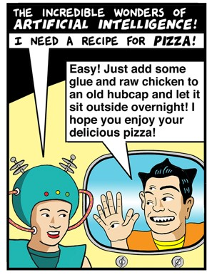

|
|
You will write two or three short papers for this course.
Paper assignments will require you to express challenging
ideas clearly and accurately and critically appraise them
fairly. Further details will be posted here as the course
progresses.
Contents
Requirements
for all drafts & papers
Drafts should:
- Meet the requirements below for integrity, format,
and style
- Integrity lapses on drafts may be charged as
violations of DePauw's academic integrity policy, so
follow the integrity
instructions
- Include an introduction with thesis and road map
(see the advice)
- Respond to the prompt
- Go through the peer review process: please turn in a
draft on time, and comment conscientiously on others'
drafts.
- Your draft will not be graded. But the grade for
your finished paper may be lowered if your draft is
missing, incomplete, not well proofread, doesn't meet
the integrity requirements, or doesn't go through peer
review.
- FYI, here is a copy of the peer review form
Academic
integrity, AI, and how to cite
|
A. If you present
another's work as if it were your own, that is
plagiarism. "Another's work" includes anything you
didn't make up yourself: the labor or
creativity other people, material produced by
AI, etc. It includes their ideas and the words
they used to express them. Therefore, to
avoid plagiarizing:
- Any time you use something you get from
another, cite it, whether you quote it or not.
- Whatever
the source was -- assigned texts or
videos, AI, class discussion, a conversation
with a friend, an academic journal, a web
page, your mother, space aliens, or whatever
-- cite it.
- If you use another person's words in your
work, put them in quotation marks and cite.
- FYI, if you just change some of the
wording here and there you may still be
plagiarizing. Either put the material in
quotation marks or completely rephrase it.
See this
exercise for help.
- Keep track of your sources.
- Citing properly will be easy if you make a
note of what you read and who you talk to
about your work. Keep track of what words
and ideas come from each source. Then, if
you use any words or ideas from your
sources, cite them and put their words in
quotation marks.
- Unsure what to do? Ask me
before you turn in the work.
Citing and
quoting properly are vital. Failing to cite and
quote as required will automatically lower your
grade, potentially down to failing. I may also
charge you with violating DePauw’s
Academic Integrity Policy. If the charge is
upheld, the minimum penalty is usually
worse than turning in no work at all. You must
keep track of, and properly document, whose
words or ideas you are using. DePauw provides
lots of info on understanding academic integrity
and how to avoid plagiarism on
this helpful page. You may also always come to me with
whatever questions you have about
integrity. |
B. My policy on using and documenting AI
I don't forbid using AI's such as ChatGPT, Bard, Bing, or
whatever. If you do use them, I have two cautions and a
policy.
The cautions:
- AI's
are unreliable. When I ask an AI to do
something I might ask of you, like explain something
on the study guide, I routinely get responses that
would earn failing grades. AI's use both good and bad
sources without discriminating between them. They are biased.
They "hallucinate"
-- that is, they say
things that are
false. Feel free to experiment with AI's if you
like, but for work you turn in for credit I recommend
you only use material from an AI when you can verify
it is accurate, or as an example you critically
evaluate. (Which, in practice, may mean that you don't
use it in this course at all.)
- The more you let AI
do for you, the more you undermine your own
education. Developing and practicing skills
in reading, critical thinking, and writing are among
the most important benefits of a liberal arts
education. Those skills matter at least as much as
whatever facts you learn because they are fundamental
to interacting intelligently with the world. Without
them, you cannot even assess whether AI is feeding you
bullshit.
The policy: if
you use any AI in any way you must document how you used
it.
Here are some possible examples:
- If you copy any text generated by an AI (whether
it's just a turn of phrase or something more), put it
in quotation marks and cite the AI.
- If you use anything (such as an idea, or an example)
you got from an AI without copying the words, still
cite the AI.
- If you use an AI to correct your grammar, spelling,
punctuation, etc., or to help outline your paper, say
so, and cite the AI.
In short, if you use AI to affect the content of your work
in any way whatsoever (wording, ideas, examples,
arguments, grammar, punctuation, organization, etc.),
document it. And, of course, the more work the AI does,
the less credit you earn.
I may use a variety of AI detectors to check your work.
This is merely an extension of the plagiarism policy
above, and reflects the main goal of academic integrity
generally, which is to give credit for any help you got.
As always, if you are unsure what's OK, ask me, preferably
before turning work in.
Like the rest of these academic integrity instructions,
this policy applies to reading responses, drafts, papers,
and take-home exams (if any). Citing and quoting are not
required for in-class exams because for them you must
write solely from memory.
C. Citing properly
Other instructors and other disciplines may have different
standards. (Sorry about that.) Learn and follow the
guidelines in each course you take. Follow these
instructions in this course. As always, if you are unsure
what's OK, ask me, preferably before turning work in.
Works Cited/Bibliography/References: If you use
any sources outside of class materials, you must include a
Works Cited for them. If
you only use class materials, a Works Cited is optional in
this course.
How to cite various
sources:
- Readings with page
numbers: Give the author's name and the page number
in parentheses, like this: (Descartes, 145) or (Locke,
187). Only cite Bailey for things Bailey wrote, like
introductory material, the logic reading, etc.
- Readings with
paragraph numbers: give the author's name
and the paragraph number, like this: (Behe, 21). You
may also use section numbers when they're available,
as they are in Locke and Berkeley, like this: (Locke,
185, §4) or (Berkeley, §18).
- Readings without
page or paragraph numbers: If the assigned
text is, for example, a web page with no page numbers,
just cite the author.
- Videos: Give
the video's title and the time at which the cited
material begins, like this: (Evidence for Intelligent
Design, 4:13). After you give the full title the first
time you cite it, you may abbreviate the title:
- First time cited: (Evidence for Intelligent
Design, 4:13)
Second and later citations: (Evidence, 2:03)
etc.
- Citing class
discussion or lecture:
- Please don't rely
only on class notes for material that is in
assigned texts or videos. The original source -- the
text or video -- is usually a richer source. Also,
since we're fallible, notes may be inaccurate. Use the
notes to help yourself understand the original source
and, if you use words or ideas from notes, you must quote
and/or cite them. But, as much as you can, work from
the original source and quote/cite it.
- Class notes: cite
the class and date, either like (Phil 101, 2021-02-05)
or (2021-02-05 Phil 101 notes)
- Class discussion:
same as for class notes.
- Recorded class
meeting (for classes taught remotely):
include the date and, like with any video, the time
where the cited material begins: (Phil 101,
2020-02-05, 15:35).
- Citing outside
sources. No research outside of assigned
texts is needed in this course, and if you don't cite
anything besides class and assigned texts or videos, I
don't require a "works cited" page. But if you use any
outside sources:
- Choose them
carefully. Here's a handy rule: if you
cannot tell who the author is, and that the author is
qualified to write about your topic, you probably
should not use that source. When in doubt, either ask
me or do not use the source.
- Cite outside
sources in Chicago or Turabian format, using
the parenthetical citations/reference list style. In
other words, cite an outside source in parentheses --
like (Miyazaki, 247) -- wherever you use it in your
work, and provide a bibliography. You must include the
URL for all sources you access via the internet. A
quick guide to Turabian format is here on
the Library web page; click the Turabian (P/RL)
tab for instructions on how to cite various kinds of
sources.
- Citing
conversations. If you got an idea while
talking with, say, a friend or relative, that is fine.
But you must still cite it. It's easy: just give the
name of the person and the date and say, "personal
communication." Example: (Joan Anderson, personal
communication, 5/23/2005).
- Citing AI:
- Before using AI
in this course, read my policy on
it.
- Whenever
you use something from an AI in your work, cite it
in parentheses with the name of the AI, like
(Bing) or (ChatGPT). If you use the AI's words you
must put them in quotation marks and cite.
Punctuate your citations
properly:
| Citing without
quoting: |
We should not
completely trust our senses because they can
deceive us; for example, at any moment we might
be dreaming (Descartes, 144).
(The period
comes after the citation. Cite the author of
the work -- in this case, Descartes -- not the
editor of the textbook.) |
| Citing when
quoting: |
The Third
Meditation argument for God is essentially that
"the idea of God, which is in us, cannot have
any cause other than God Himself" (Descartes,
143).
(The citation
goes outside the quotation marks and the
period comes after the citation. Again, cite
the author.) |
Also:
|
When you mention
the author's name in the sentence, you don't
need to include it in the citation (though
including it is never wrong). For
example:
Descartes says
we should not completely trust our senses
because they can deceive us; for example, at
any moment we might be dreaming (145).
|
Paper
format
- About length: I grade content, not length. I will not
lower your grade merely because your paper is not within
the stated word count. Instead, think of it this way: if
you write your paper and end up at only 800 words, you
probably need to say more. If you end up at 1500+ words,
you maybe should cut some material out or be more
concise.
- Word (.docx or .doc), Rich Text Format (.rtf), or
shared Google doc only. No PDF's or Pages files, please.
- Double spaced, 1" margins, numbered pages, 12-point
Times New Roman or similar font.
- Your name and the word count (for the text of the
paper, not counting bibliography, etc.) at the top.
- Free of errors in grammar, spelling, punctuation, etc.
Do not trust your college GPA to auto-correct or to
grammar- or spell-checkers! Proofread your paper
yourself. Read it aloud!
Style
- Strive for
simplicity. Use simple, clear language as much
as possible. Don't use big words or complicated
sentences when simpler words and sentences will do. For
more specific advice:
- Avoid clichés.
Please don't tell me how long humanity has
pondered your topic ("For centuries, humanity has
pondered the nature of reality..."), or give me
Webster’s definition of anything.
- You may write in the first person if you like.
- Revise and rewrite. Complete
a draft and then let it sit for at least a few hours.
Then come back and revise to make it even clearer and
more logical, and to proofread it. I also recommend you
get assistance from DePauw's
Writing center. Of course all this means you
should get started well before the deadline.
Advice for
writing a good paper
- Start with a thesis
and map. Give readers a clear preview of what
you will do in the paper in a brief introduction. There
are two important reasons for this. First, it's a
courtesy to readers. Second, writing it makes you think
about, and refine, what you're going to say.
- Your intro should be no more than half a page, and
include:
- A thesis: why you think
the argument is good or bad; and
- A map: a
brief summary of how you will support your thesis.
- Resist the temptation to do much more than this in
your introduction.
- Make your thesis and road map specific, not generic:
| Avoid generic,
less-informative maps like these: |
Instead, give a map that's more
specific about what you'll do, more like this: |
"First I will present the
argument. Then I will object to it and conclude
the argument is unsound."
"I will first present the argument. Then I will
present an objection to it and show why the
objection fails."
(These are
better than nothing but say too little.)
|
"After explaining Descartes'
argument that God exists, I will defend it against
an objection. The objection tries to show
Descartes' argument is unsound because people do
not all share the same idea of God. I will argue,
however, that this objection does not show that
any of Descartes' premises are false or that his
argument is invalid, so the objection fails."
(This gives a
much clearer picture of what to expect in the
paper.)
|
- Second, explain your
chosen argument, in 1-2 pages.
- Class notes will help you understand the argument,
but a paper that does nothing but write up notes or
copy from the blackboard won't be very good. Try to
use the source.
- Explain the whole argument, as if to someone who has
never heard of it.
- Here are some good ways to do that:
- Explain it all in your own words (but citing all
along); or
- Quote --> explain --> quote --> explain.
That is, quote a premise from the text, then explain
for yourself what it means, then quote some more and
explain that, and so on until you've shown how the
whole argument works. For any conclusions, explain
how they're supposed to follow from the premises.
- Or, some of each.
- Be charitable. Even if you don't agree with the
argument, make it look as persuasive as possible
(without misrepresenting what the author says).
- For the first paper, explaining the argument well is
the most important part. After that, evaluating is
just as important.
- Third, evaluate that
argument, in 1-2 pages. Argue for why some
objection(s) shows, or fails to show, the argument is
unsound or weak.
- For the first paper, this part is less important
than presenting the argument. After that, evaluating
is just as important.
- State just one or two objections. More than that
will not work in a short paper.
- Choose good objections, not easily dismissed.
- Rather than say why you personally think an argument
is good or bad, explain why any reasonable person
should agree with your assessment.
- Using an objection from the text or class? Fine!
Cite it! From something you found on the internet?
Cite it! From a chat with a friend, a relative, space
aliens, or any other source? Cite!
- Evaluating the argument doesn't have to mean showing
the argument is bad. Maybe it turns out the argument
is good -- or at least that some objection(s) fail to
show it's bad. There are many ways a paper can go.
Here are some you might try:
- Here's the argument. Here's an objection. Here's
why the objection shows the argument is bad. The
end.
- Here's the argument. Here's an objection. The
objection, though, fails to show the argument is
bad. So, the argument is immune to that objection.
- Here's the argument. Here's an objection. Here's
why this objection fails. But wait, here's another
objection, and it succeeds. So the argument is bad.
- Here's an argument. Here's an objection. Oh, and
here's another. But here's why they both fail to
show the argument is bad. So the argument is immune
to both those objections.
- Of these, #1 and #2 are okay; #3 and #4 show more
sophistication, which is even better. But: one
objection well presented and discussed is just fine!
And for the first paper, presenting the argument
well matters the most.
- Before you turn in your
draft:
- Make sure you have followed the general requirements
for papers given above:
- Does the draft follow the academic
integrity instructions?
- Have you followed the format
instructions? Proofread it carefully?
- Have you followed the style
instructions? Is it clear? Could you simplify the
wording?
- Ask yourself: would your arguments persuade someone
who did not already agree with you?
- Before submitting the
final version, consider any feedback you
received and use it to improve the paper.
|